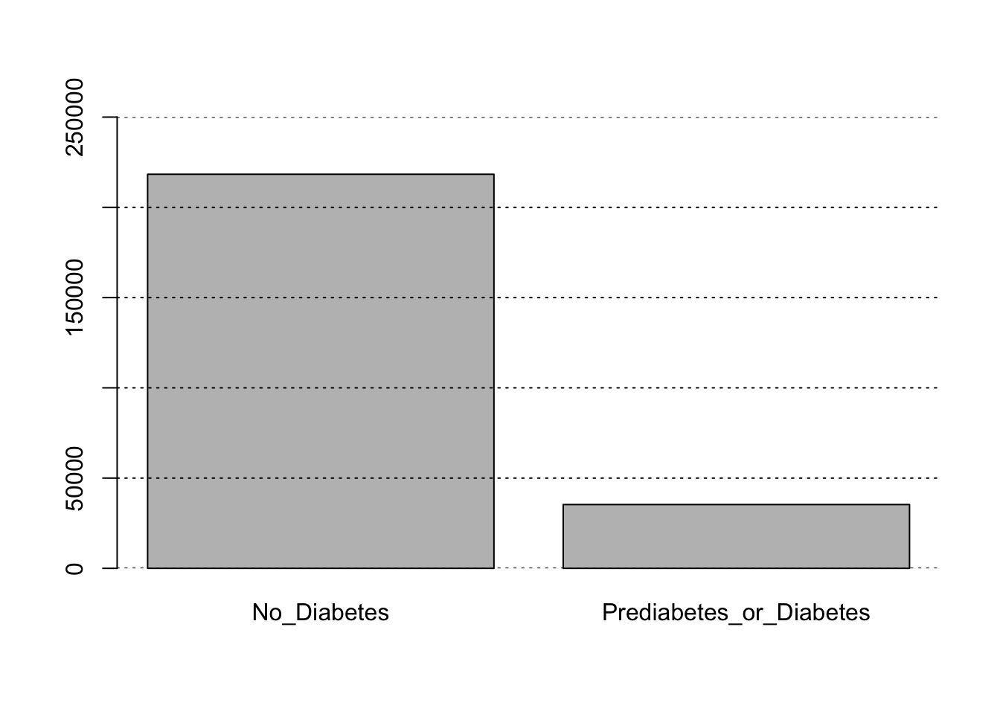
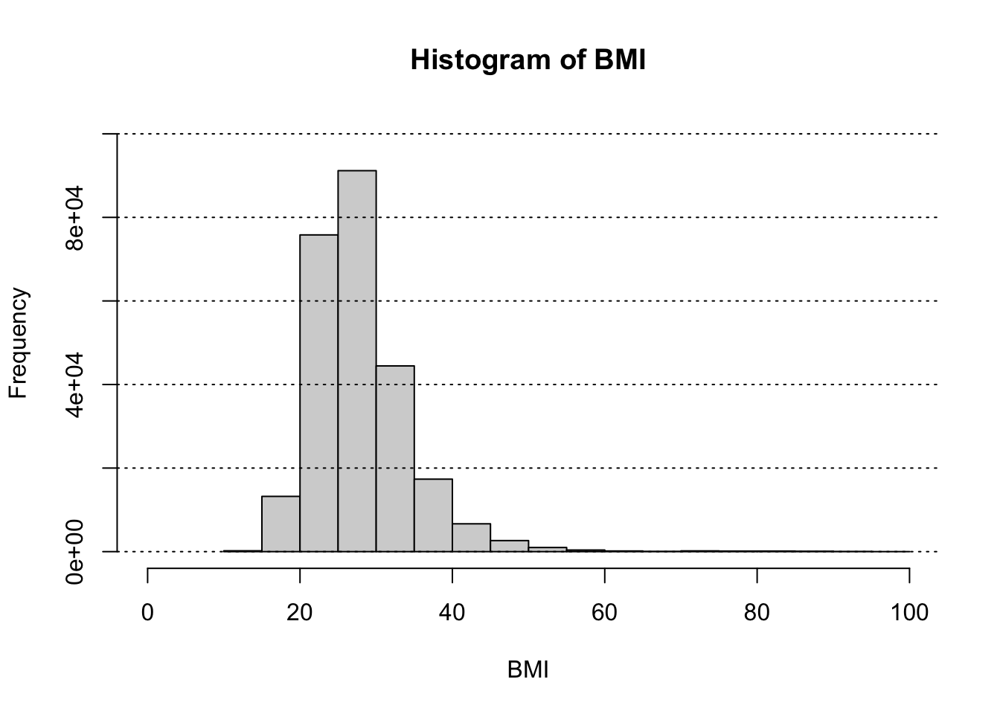
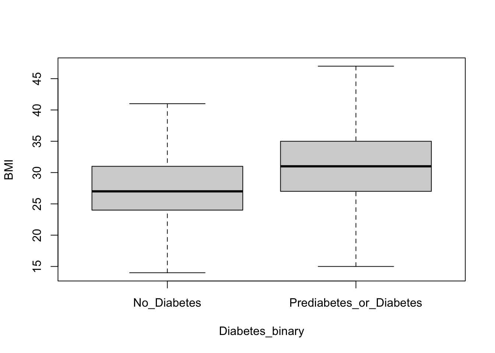
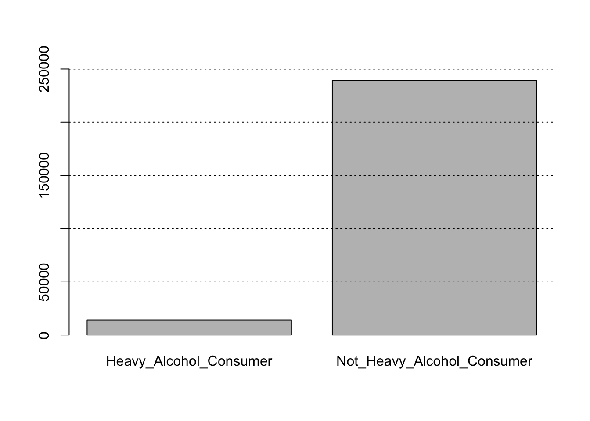
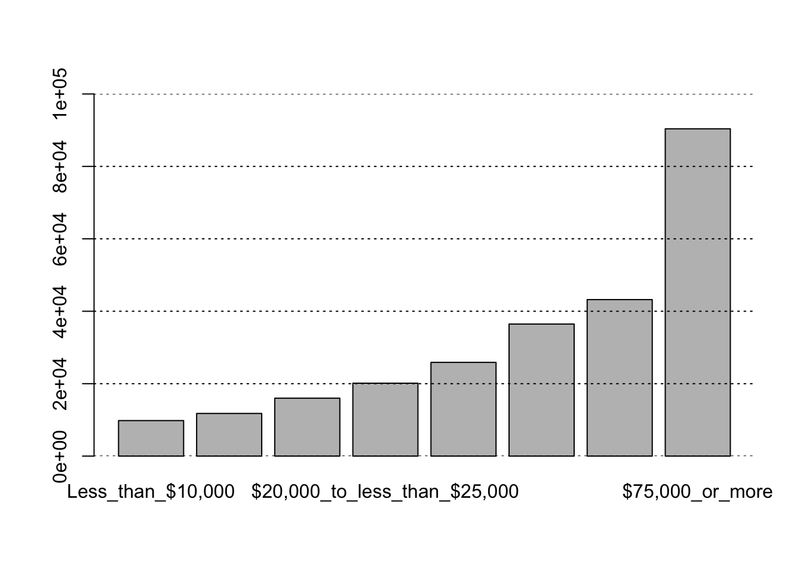

The data explored in this analysis comes from the the CDC’s BRFSS2015 survey. The target variable for analysis is the Diabetes_binary variable which is in 2 classes: no diabetes or prediabetes/diabetes. There are 21 predictor variables in the dataset to potentially include in the subsequent models.
Variable Name
Description
Classes or Range
HighBP
Factor variable for high blood pressure
“No High BP” or “High BP”
HighChol
Factor variable for high cholesterol
“No High Cholesterol” or “High Cholesterol”
CholCheck
Factor variable for if the respondent received a cholesterol check in the last 5 years
“No Cholesterol Check In 5 Years” or “Yes Cholesterol Check In 5 Years”
BMI
Continuous variable for the body mass index of the respondent
Values greater than 0
Smoker
Factor variable where a smoker means the respondent has smoked at least 100 cigarettes (5 packs) in their entire lifetime.
“Smoker” or “Not A Smoker”
Stroke
Factor variable for whether the respondent has been diagnosed with a stroke or not.
“Diagnosed With Stroke” or “No Stroke”
HeartDiseaseorAttack
Factor variable for whether the respondent has been diagnosed with heart disease and/or myocardial infarction or not.
“Coronary Heart Disease or Myocardial Infarction” or “No Heart Disease Evident”
PhysActivity
Factor variable for whether the respondent was physically active in the past 30 days or not (not including job).
“Physical Activity in Past 30 Days” or “No Physical Activity in Past 30 Days”
Fruits
Factor variable on whether the respondent consumes fruit regularly, defined as consuming fruit 1 or more times per day.
“Consume Fruit 1 Or More Times Per Day” or “Does Not Consume Fruits Regularly”
Veggies
Factor variable on whether the respondent consumes vegetables regularly, defined as consuming vegetables 1 or more times per day.
“Consume Vegetables 1 Or More Times Per Day” or “Does Not Consume Vegetables Regularly”
HvyAlcoholConsump
Factor variable on whether the respondent is a heavy alcohol consumer or not. This is defined as heavy if the respondent is an adult men and drinks 14 or more drinks per week or 7 or more drinks per week for adult women.
“Heavy Alcohol Consumer” or “Not Heavy Alcohol Consumer”
AnyHealthcare
Factor variable for whether the respondent has any kind of health care coverage, including health insurance, prepaid plans such as HMO, etc.
“Has Health Insurance” or “No Health Insurance”
NoDocbcCost
Factor variable for whether the respondent in the past 12 months could not see a doctor due to cost but needed to.
“Missed Doctors Visit Due to Cost” or “No Cost Barrier to Healthcare”
GenHlth
Factor variable for the respondents general health.
“Excellent”
“Very Good”
“Good”
“Fair”
“Poor”
MentHlth
Count variable for the number of days of poor mental health in the last 30 days.
Scale from 1 to 30
PhysHlth
Count variable for the number of days of physical illness or injury in the last 30 days.
Scale from 1 to 30
DiffWalk
Factor variable for whether the respondent had difficulty with walking or climbing stairs.
“Difficulty With Walking or Stairs” or “No Difficulty With Walking or Stairs”
Sex
Factor variable for the respondents sex.
“Female” or “Male”
Age
Factor variable for the respondents age.
“18-24”
“25-29”
“30-34”
“35-39”
“40-44”
“45-49”
“50-54”
“55-59”
“60-64”
“65-69”
“70-74”
“75-79”
“80 or older”
Education
Factor variable for the respondents highest completed education.
“Never Attended School Or Only Kindergarten”
“Grades 1-8”
“Grades 9-11”
“Grades 12 or GED”
“Some College or Technical School”
“Graduated College or Technical School”
Income
Factor variable for the respondents income.
“Less than $10,000”
“$10,000 to less than $15,000”
“$15,000 to less than $20,000”
“$20,000 to less than $25,000”
“$25,000 to less than $35,000”
“$35,000 to less than $50,000”
“$50,000 to less than $75,000”
“$75,000 or more”
The dataset is unbalanced meaning there are more cases where the survey respondent had no diabetes than in the case where the survey respondent either had prediabetes or diabetes. This is important when it comes to modeling as we likely will want to ensure that our model does better than the majority class rate, or rate of the largest class of the dataset, in this case being the no diabetes class. If a model only predicted the majority class it would still achieve this majority class accuracy, but it would not be useful. Ensuring the model is useful in predicting the Diabetes_binary variable based on a set of predictors is the goal and ensuring the accuracy of the model is better than the majority class rate will be one important evaluation of model importance. This exploratory data analysis serves to try to determine a few useful predictors to use when
Data
#Library these packageslibrary(tidyverse)
── Attaching core tidyverse packages ──────────────────────── tidyverse 2.0.0 ──
✔ dplyr 1.1.4 ✔ readr 2.1.5
✔ forcats 1.0.0 ✔ stringr 1.5.1
✔ ggplot2 3.5.2 ✔ tibble 3.2.1
✔ lubridate 1.9.4 ✔ tidyr 1.3.1
✔ purrr 1.1.0
── Conflicts ────────────────────────────────────────── tidyverse_conflicts() ──
✖ dplyr::filter() masks stats::filter()
✖ dplyr::lag() masks stats::lag()
ℹ Use the conflicted package (<http://conflicted.r-lib.org/>) to force all conflicts to become errors
#Read in csv fileDiabetes<-read.csv("diabetes_binary_health_indicators_BRFSS2015.csv")#Determine structure of datastr(Diabetes)
The data for this analysis can be found at the following website (https://www.kaggle.com/datasets/alexteboul/diabetes-health-indicators-dataset/). As noticed above, all the variables are treated as numeric; however, a majority of the variables are actually factors. We can transform those variables into factors with meaningful level names.
#Transform data from numeric to factorDiabetes<-Diabetes|>mutate(Diabetes_binary=factor(Diabetes_binary,levels=c("0","1"),labels=c("No Diabetes","Prediabetes/Diabetes")),HighBP=factor(HighBP,levels=c("0","1"),labels=c("No High BP","High BP")),HighChol=factor(HighChol,levels=c("0","1"),labels=c("No High Cholesterol","High Cholesterol")),CholCheck=factor(CholCheck,levels=c("0","1"),labels=c("No Cholesterol Check In 5 Years","Yes Cholesterol Check In 5 Years")),Smoker=factor(Smoker,levels=c("1","0"),labels=c("Smoker","Not A Smoker")),Stroke=factor(Stroke,levels=c("1","0"),labels=c("Diagnosed With Stroke","No Stroke")),HeartDiseaseorAttack=factor(HeartDiseaseorAttack,levels=c("1","0"),labels=c("Coronary Heart Disease or Myocardial Infarction","No Heart Disease Evident")),PhysActivity=factor(PhysActivity,levels=c("1","0"),labels=c("Physical Activity in Past 30 Days","No Physical Activity in Past 30 Days")),Fruits=factor(Fruits,levels=c("1","0"),labels=c("Consume Fruit 1 Or More Times Per Day","Does Not Consume Fruits Regularly")),Veggies=factor(Veggies,levels=c("1","0"),labels=c("Consume Vegetables 1 Or More Times Per Day","Does Not Consume Vegetables Regularly")),HvyAlcoholConsump=factor(HvyAlcoholConsump,levels=c("1","0"),labels=c("Heavy Alcohol Consumer","Not Heavy Alcohol Consumer")),AnyHealthcare=factor(AnyHealthcare,levels=c("1","0"),labels=c("Has Health Insurance","No Health Insurance")),NoDocbcCost=factor(NoDocbcCost,levels=c("1","0"),labels=c("Missed Doctors Visit Due to Cost","No Cost Barrier to Healthcare")),GenHlth=factor(GenHlth,levels=c("1","2","3","4","5"),labels=c("Excellent","Very Good","Good","Fair","Poor")),DiffWalk=factor(DiffWalk,levels=c("1","0"),labels=c("Difficulty With Walking or Stairs","No Difficulty With Walking or Stairs")),Sex=factor(Sex,levels=c("0","1"),labels=c("Female","Male")),Age=factor(Age,levels=c("1","2","3","4","5","6","7","8","9","10","11","12","13"),labels=c("18-24","25-29","30-34","35-39","40-44","45-49","50-54","55-59","60-64","65-69","70-74","75-79","80 or older")),Education=factor(Education,levels=c("1","2","3","4","5","6"),labels=c("Never Attended School Or Only Kindergarten","Grades 1-8","Grades 9-11","Grades 12 or GED","Some College or Technical School","Graduated College or Technical School")),Income=factor(Income,levels=c("1","2","3","4","5","6","7","8"),labels=c("Less than $10,000","$10,000 to less than $15,000","$15,000 to less than $20,000","$20,000 to less than $25,000","$25,000 to less than $35,000","$35,000 to less than $50,000","$50,000 to less than $75,000","$75,000 or more")), )
After transforming the data so that appropriate categorical variables are stored as such, it is important to check for missing values in the data as that can cause issues with modeling.
#Check for na's in the data set Diabetesany(is.na(Diabetes))
[1] FALSE
The result of FALSE shows there are no NA’s in the data set. This means this data is ready for the exploratory data analysis stage.
Summarizations
In this exploratory data analysis stage, we want to evaluate three variables that may be beneficial in predicting the diabetes status (i.e. the Diabetes_binary variable). To do this we can explore the variables in both uni variate and bivariate analyses.
Diabetes_binary

No Diabetes Prediabetes/Diabetes
218334 35346
This bar plot shows the frequency of the respondents that had no diabetes diagnosis compared to those that had prediabetes or diabetes diagnoses. This confirms the original detail of the data that this is an unbalanced design. Specifically, we see that \(\frac{218334}{253680}\approx\) 86.07%. This is the majority class rate that the accuracy of our models would need to do better than in order to be beneficial.
Three explanatory variables of interest to analyze are BMI, HvyAlcoholConsump, and Income. Research suggests that increased BMI is related to an increase in risk of diabetes (https://pmc.ncbi.nlm.nih.gov/articles/PMC4457375/). Furthermore, it is possible that income relates to diabetes risk as healthy food is known to be expensive when compared to cheaper food. Alcohol consumption would also be a consideration as alcohol is high in sugar. Univariate analysis can be performed on these three variables to analyze their distributions. Bivariate analysis between each explanatory variable with the response variable is also useful to determine initial association based on statistical significance.
BMI

The median of the BMI of the respondents is 27
The range of the BMI of the respondents is 12 98
The univariate analysis of the BMI of the survey respondents shows that the distribution of BMIs is right skewed with a median of 27. According to the National Heart, Lung, and Blood Institute, a BMI over 24.9 is considered overweight (https://www.nhlbi.nih.gov/health/educational/lose_wt/risk.htm). This analysis shows that a majority of the respondents were overweight based on BMI and earlier research was shown that high BMI is associated with increased risk in diabetes.

The bivariate analysis of Diabetes_binary with BMI (with outliers removed) shows that the median BMI for respondents without diabetes is lower than median BMI for respondents with prediabetes/diabetes. This validates the assumption earlier based on the research that BMI may be a useful predictor of diabetes status.
Heavy Alcohol Consumption (HvyAlcoholConsump)

Heavy Alcohol Consumer Not Heavy Alcohol Consumer
14256 239424
The univariate analysis of the HvyAlcoholConsump variable shows a bar plot similar to that of the Diabetes_binary response variable where there is a high frequency in one class and a low frequency in another. As discussed before, alcohol consumption might be associated with diabetes as alcohol contains high levels of sugar. Consider the proportion of respondents with prediabetes/diabetes and those that are heavy alcohol consumers is similar this variable should be considered as a potential explanatory variable.
HvyAlcoholConsump
Diabetes_binary Heavy Alcohol Consumer Not Heavy Alcohol Consumer
No Diabetes 13424 204910
Prediabetes/Diabetes 832 34514
The bivariate analysis of Income and Diabetes_binary using a Chi-square test for independence shows statistically significance suggesting that the variables of Income and Diabetes_binary are not independent, and thus should be considered for use as a predictor. We performed this test on the contingency table shown above.
Income

Less than $10,000 $10,000 to less than $15,000
9811 11783
$15,000 to less than $20,000 $20,000 to less than $25,000
15994 20135
$25,000 to less than $35,000 $35,000 to less than $50,000
25883 36470
$50,000 to less than $75,000 $75,000 or more
43219 90385
The univariate analysis of the Income variable shows that the distribution is left skewed with the income of the respondents being relatively high in terms of the provided classes. As discussed prior, higher incomes are likely associated with less risk of diabetes since higher incomes provide access to healthy foods which are generally lower in sugar. Therefore, this variable may be a useful predictor as similarly to the other variables, the majority class of the variable is associated with the majority class of the diabetes variable which was no diabetes. It can be further analyzed with bivariate analysis whether income is statistically associated with diabetes status.
Income
Diabetes_binary Less than $10,000 $10,000 to less than $15,000
No Diabetes 7428 8697
Prediabetes/Diabetes 2383 3086
Income
Diabetes_binary $15,000 to less than $20,000
No Diabetes 12426
Prediabetes/Diabetes 3568
Income
Diabetes_binary $20,000 to less than $25,000
No Diabetes 16081
Prediabetes/Diabetes 4054
Income
Diabetes_binary $25,000 to less than $35,000
No Diabetes 21379
Prediabetes/Diabetes 4504
Income
Diabetes_binary $35,000 to less than $50,000
No Diabetes 31179
Prediabetes/Diabetes 5291
Income
Diabetes_binary $50,000 to less than $75,000 $75,000 or more
No Diabetes 37954 83190
Prediabetes/Diabetes 5265 7195
Pearson's Chi-squared test
data: table(Diabetes_binary = Diabetes$Diabetes_binary, Income = Diabetes$Income)
X-squared = 7003.7, df = 7, p-value < 2.2e-16
Using a Chi-square test for independence it appears statistically significant suggesting that the variables of Income and Diabetes_binary are not independent, and thus should be considered for use as a predictor. We performed this test on the contingency table shown above.